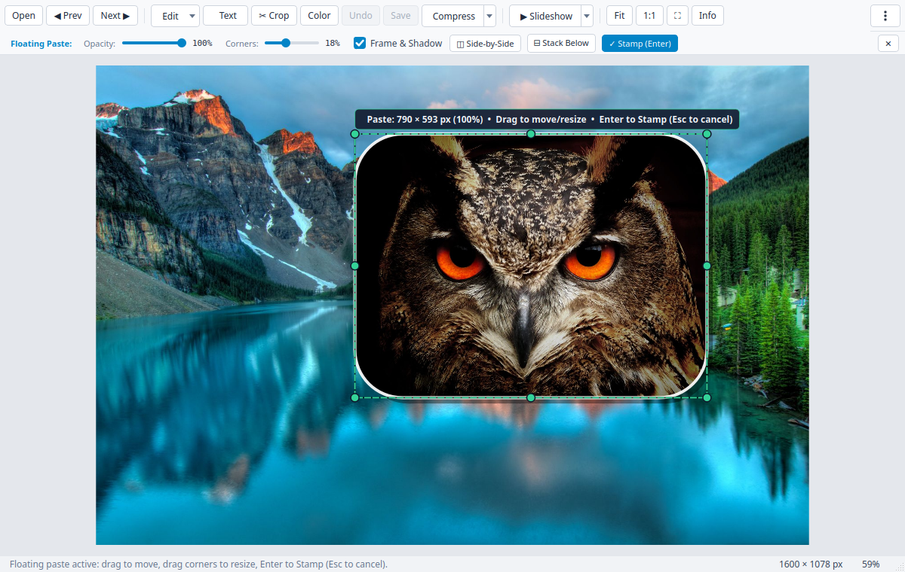
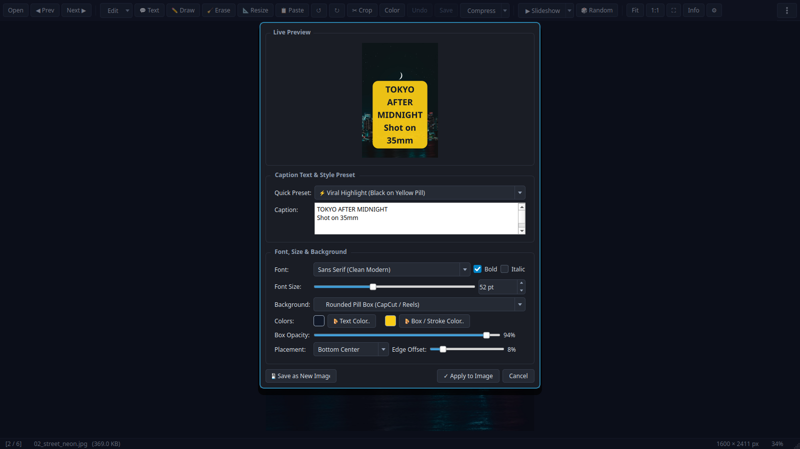
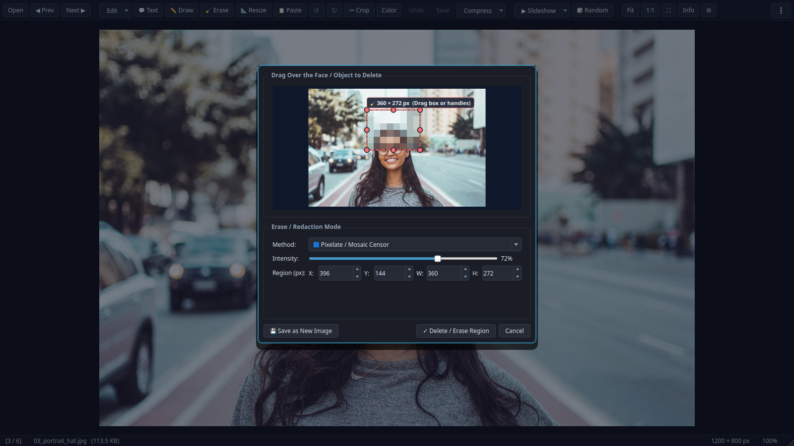
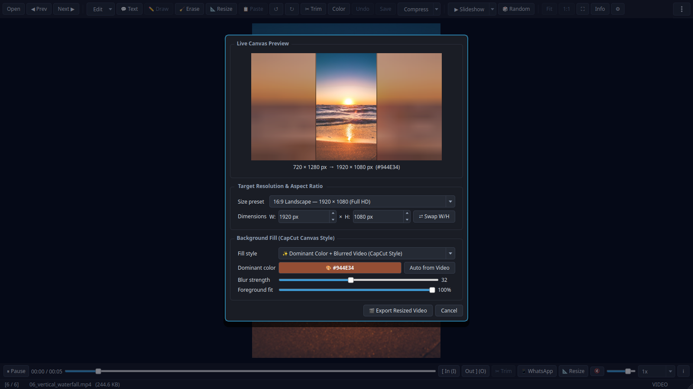
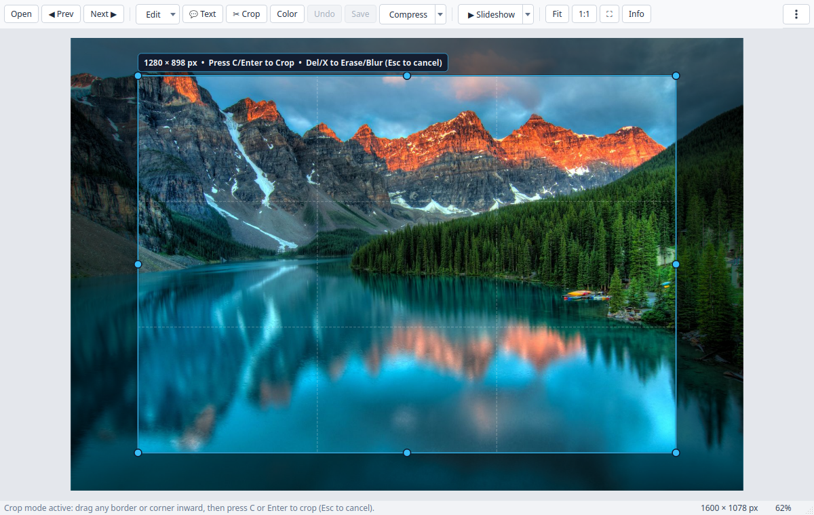

The Fast Image & Video Viewer with Built-In Superpowers
Browse folders at 60fps, drag borders to crop, mash up images with floating paste & stamp, blur or pixelate faces, add CapCut-style pill captions, and reframe 9:16 vertical videos to 16:9 landscape in one click.
$uv tool install git+https://github.com/hakanu/hakuview.git && hakuview --install-desktop
🎥 Recorded live in HakuView with Pexels stock photos & vertical video — showing Border Crop, Pill Captions, Floating Paste & Stamp, Face Pixelation, and CapCut-Style Video Reframe.
Everything You Wish Your Default Viewer Could Do
No waiting 15 seconds for Photoshop or Premiere to boot just for a quick crop, meme caption, face blur, or WhatsApp video fix.
Mash Up Multiple Images Right on the Canvas
Copy any image from your browser, screenshot tool, or file manager and press Ctrl+V (or Shift+Drop) to float it directly over the current photo.
- Drag inside to move, or drag the 8 handles to resize freely
- Live sliders for Opacity %, Rounded Corners, and White Frame + Drop Shadow
- Press Enter to stamp and chain more images, or 1-click ◫ Side-by-Side / ⊟ Stack Below

CapCut & Reels-Style Captions for Photos & Videos
Add crisp multi-line text overlays with customizable fonts, sizes, colors, and background boxes — rendered non-destructively onto photos or burned into videos via FFmpeg.
- 5 curated presets including Viral Yellow Pill, Cinema Subtitle, and Classic Meme Impact
- Rounded pill background, full-width banner strip, or bold outline stroke
- 9-point snap placement grid + optional video In/Out timestamp range

Blur Faces, Pixelate License Plates, or Heal Blemishes
Select a region in Crop mode and hit Delete (or press X anytime) to scrub out unwanted faces, private text, or watermarks on both images and videos.
- Heavy Gaussian Blur & Pixelate / Mosaic Censor for privacy redaction
- Smart Heal (Inpaint / FFmpeg Delogo) seamlessly interpolates surrounding pixels
- Solid Blackout or Auto-Sampled Color Patch for clean document redaction

Convert 9:16 Vertical Videos to 16:9 Landscape with Blurred Backdrop
Turn vertical phone clips into widescreen 16:9 (or 1:1 Square / 4:5 Instagram) without ugly black bars — complete with automatic K-Means dominant color extraction and Gaussian-blurred background fill.
- 5 backdrop styles: Dominant Color + Blur, 4-Corner Living Ambient Glow, Pure Blurred Video, Solid Fill, and Center Crop
- Live interactive canvas preview with adjustable blur sigma & foreground scale
- Indeterminate-to-percentage live FFmpeg progress bar with instant cancel

Tactile Border Cropping & Deep Codec Diagnostics
Press C to pull any edge or corner inward with live Rule-of-Thirds guides, or press I to inspect true uncompressed-vs-file compression ratios, BPP efficiency, and stream bitrates.
- 1-Click WhatsApp Web Export (K): H.264 High@L4.0 + yuv420p + AAC + faststart under 16 MB
- Lossless Video Trim ([ / ] + T) & 1-Click Strip Audio (🔇)
- Live Color Bar (L): Brightness, Contrast, Saturation & Auto-Enhance

📱 WhatsApp Web Video Fix
Press K to transcode any stubborn MKV/HEVC/WebM clip into strict WhatsApp-compatible MP4 with automatic 2-pass size targeting.
🔄 Video Rotate & Flip
Fix sideways phone videos with R / L / H / V and export with live progress feedback.
🗜️ Target-KB Image Compress
Dial a quality slider or enter an exact target KB budget (e.g. 200 KB for web forms) with binary-search JPEG/WebP/PNG encoding.
🖥️ 1-Command Desktop Integration
Run hakuview --install-desktop once to register file associations and custom Owl icons on Linux, macOS, and Windows.
How HakuView Compares
Traditional viewers can't edit videos or mash up images, paint apps can't browse folders or play videos, and NLEs take 15 seconds just to import a file.
| Feature / Workflow | 🦉 HakuView | IrfanView | XnView MP | KolourPaint | Windows Paint | CapCut Desktop |
|---|---|---|---|---|---|---|
| OS Support | Linux, Win, macOS | Windows only | Linux, Win, macOS | Linux (KDE) | Windows only | Win, macOS |
| License & Cost | Open Source (MIT) | Freeware (Closed) | Freeware (Closed) | Open Source (BSD) | Proprietary | Freemium (Paid Pro) |
| Instant Folder Cycling (←/→) | ✅ Preloaded | ✅ Yes | ✅ Yes | ❌ Editor only | ❌ Editor only | ❌ Project import |
| Native Video Playback in Same Window | ✅ Yes (Qt6/FFmpeg) | ⚠️ Needs plugins | ✅ Yes | ❌ No | ❌ No | ✅ Heavy timeline |
| Tactile Border-Drag Crop (C) | ✅ Yes | ⚠️ Box + menu | ⚠️ Box + menu | ⚠️ Box select | ⚠️ Box select | ✅ Yes |
| Floating Paste & Stamp Mashup (Ctrl+V) | ✅ Opacity, Corners, Frame, Stitch | ❌ Overwrites | ❌ Basic clipboard | ⚠️ Basic raster | ⚠️ Basic raster | ✅ Full layers (Heavy) |
| Reels / Pill Captions (Photos & Videos) | ✅ Yes (A) | ⚠️ Images only | ⚠️ Images only | ⚠️ Basic text box | ⚠️ Basic text box | ✅ Yes |
| Face / Object Blur, Pixelate & Smart Heal | ✅ Photos & Videos (Delogo) | ⚠️ Images only | ⚠️ Images only | ❌ Manual smudge | ❌ Manual erase | ⚠️ Paid / Keyframes |
| 9:16 → 16:9 Blurred-Backdrop Video Reframe | ✅ Free (5 Styles) | ❌ No | ❌ No | ❌ No | ❌ No | 💰 Paid Pro feature |
| Lossless Video Trim ([/]+T) & Mute | ✅ Instant stream copy | ❌ No | ❌ No | ❌ No | ❌ No | ❌ Always re-encodes |
| 1-Click WhatsApp Web Video Fix (< 16 MB) | ✅ Yes (K) | ❌ No | ❌ No | ❌ No | ❌ No | ❌ Manual settings |
| Geeky Codec / BPP / EXIF Inspector (I) | ✅ Yes | ✅ Yes | ✅ Yes | ❌ No | ❌ No | ❌ Basic info |
| Freehand Pen / Arrow / Shape Drawing | ❌ Not yet | ⚠️ Paint plugin | ⚠️ Basic draw | ✅ Full paint suite | ✅ Full paint suite | ⚠️ Stickers / Draw |
| Image Pixel / % Resize (Resample) | ❌ Video only so far | ✅ Yes (Ctrl+R) | ✅ Yes | ✅ Yes | ✅ Yes | ✅ Yes |
| Batch Convert / Batch Rename | ❌ Single-file focus | ✅ Yes (B) | ✅ Yes | ❌ No | ❌ No | ❌ No |
| Folder Thumbnail Grid / Contact Sheet | ❌ 1-by-1 viewer | ✅ Yes (T) | ✅ Yes | ❌ No | ❌ No | ✅ Media bin |
| Multi-Track Video Timeline & Keyframes | ❌ Quick clip tools | ❌ No | ❌ No | ❌ No | ❌ No | ✅ Full NLE |
Keyboard-First Workflow
Every tool in HakuView is reachable with a single keystroke.
| Shortcut | Action |
|---|---|
| ← → / Home End | Previous / Next / First / Last media file in folder |
| C then Enter | Toggle Border-Drag Crop mode & apply crop |
| A or Shift+T | Open Caption / Pill Text Overlay dialog (Images & Videos) |
| Ctrl+V / Ctrl+Shift+V | Floating Paste from clipboard / Paste Image from File to mash up |
| X or Delete | Erase / Blur / Pixelate / Smart-Heal selected region |
| R / H / V | Rotate 90° CW / Flip Horizontal / Flip Vertical (Images & Videos) |
| L | Toggle Live Color Adjustment Bar (Brightness, Contrast, Saturation) |
| [ / ] then T | Set Video Trim In / Out points and export lossless clip |
| K | 1-Click WhatsApp Web Compatible MP4 Export (< 16 MB) |
| I / F11 / Ctrl+Z | Geeky Media Inspector / Fullscreen / Multi-step Undo |